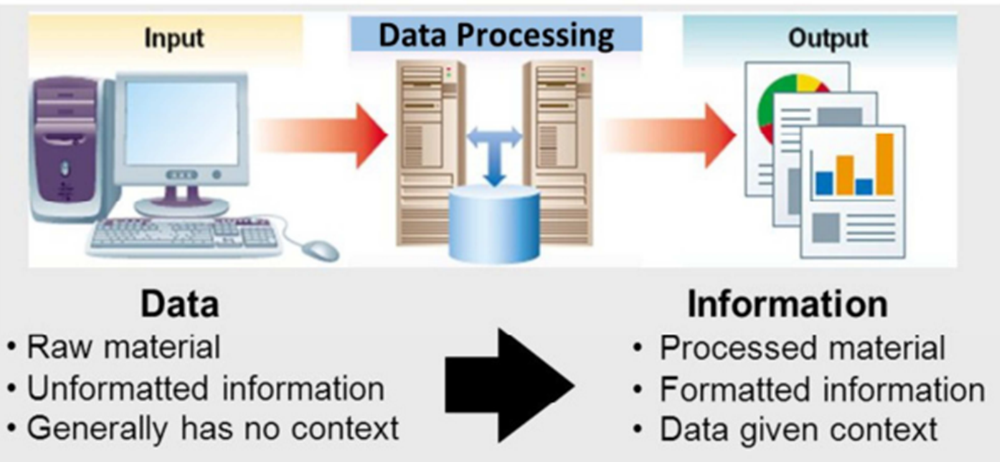

Topics
(Select the topic to go to its section of the page)
Data and Information
Data is presented as raw elements or unprocessed facts like numbers, symbols, text, and images. It is often raw and unstructured but abundant and readily available. These components, in their initial form, are merely structured pieces of information without inherent meaning. However, when properly organized or processed, they become more meaningful and valuable. (Jain, 2024)
Information is the processed, organized, interpreted, and structured data. It is the comprehensible output that is derived from raw data. Information itself provides context and insights similar to a trend analysis. The Process could be done (Jain, 2024)
The process of transforming data into information could be in the form of addition, subtracting, comparison, sorting, rearrangement, etc.
Types of Quantitative data
Quantitative information focuses on the measurement of variables, their variation, or their exact values.is represented numerically and answers questions like "how much" or "how many." Examples include the annual sales figures of a manufacturing company.
Qualitative information pertains to the characteristics or qualities of an entity. While it is not exact or precise, it is valuable for comparative analysis. Examples include assessing the quality of a product's paintwork or electroplating and variations in tolerances of manufactured parts, such as deviations from standard dimensions.
The process of design is deeply interrelated with theory and abstraction. It aims for better comprehension of the nature of computing through the systematic planning along with creating software to solve computing problems
Information Systems
Information Systems are the software and hardware systems that support data-intensive applications [3]. A system comprising interconnected components designed to gather, store, and process data, as well as to deliver information, knowledge, and digital products
Information Systems are used to run interorganizational supply chains and electronic markets. For instance, corporations use information systems to process financial accounts, to manage their human resources, and to reach their potential customers with online promotions.
Individuals rely on information systems, generally Internet-based, for conducting much of their personal lives: for socializing, study, shopping, banking, and entertainment.
From a sociotechnical perspective, information systems comprise four components: task, people, structure (or roles), and technology(O'Hara, M.T., et al., 1999) [5]
The core elements of information systems include computer hardware and software, network communications, and data or databases. The first three are technological aspects, while the latter two—people and processes—distinguish information systems from more technical disciplines like computer science. (Bourgeois, 2019) [6]
Computer Hardware
Computer Software
Data or databases
Network Communications
People
Different Types of Support Systems in Information Systems
Facilitates the operations involved in designing, marketing, producing, and delivering products. In larger organizations, these processes are often managed through extensive, integrated systems known as enterprise systems. Many transaction processing systems also support electronic commerce over the Internet, including online shopping, banking, and securities trading.
Management at all levels, from those handling short-term schedules and budgets for small teams to those focused on long-term plans and budgets for the entire organization. Management reporting systems generate regular, detailed, and extensive reports tailored to each manager's specific responsibilities.
These systems are commonly used to analyze existing structured information and enable managers to forecast the potential impacts of their decisions into the future.
Provide essential information in a highly summarized and accessible format, usually through a graphical digital dashboard. They assist executives and senior managers in analyzing the organizational environment, identifying long-term trends, and planning suitable courses of action
An advanced information system that leverages the knowledge and decision-making processes of experts in a particular field to improve productivity and competitiveness in areas such as forecasting, marketing, and scheduling is known as an expert system.
Efficiently collect, organize, store, analyze, and distribute data across various systems to handle repetitive and routine tasks. By automating these processes, office automation systems ensure smooth and error-free data flow with minimal human intervention. They enhance office productivity by streamlining tasks through the use of both hardware and software solutions
References
[1] Jain, S. (2024, July 16). What is Data vs. What is Information. Bloomfire. https://bloomfire.com/blog/data-vs-information/
[2] Patterson, L., & Patterson, L. (2023, August 8). What are data, information, and knowledge? Internet of Water - Better Water Data for Better Water Management. https://internetofwater.org/valuing-data/what-are-data-information-and-knowledge/
(Patterson & Patterson, 2023)
[3] Zwass, V. (2024, August 14). Information system | Definition, Examples, & Facts. Encyclopedia Britannica. https://www.britannica.com/topic/information-system
[4] Bourgeois, D. (2019, August 12). Chapter 1: What is an Information System? - Information Systems for Business and Beyond (2019). Information Systems for Business and Beyond (2019).
[5] O’Hara, M. T., Watson, R. T., & Kavan, C. B. (1999). Managing the three Levels of Change. Information Systems Management, 16(3), 63–70. https://doi.org/10.1201/1078/43197.16.3.19990601/31317.9
[6] Bourgeois, D. (2019, August 12). Chapter 1: What is an Information System? - Information Systems for Business and Beyond (2019). Information Systems for Business and Beyond (2019). https://opentextbook.site/informationsystems2019/chapter/chapter-1-what-is-an-information-system-information-systems-introduction/#:~:text=The%20Components%20of%20Information%20Systems,of%20when%20defining%20information%20systems
[7] Shri Ram College of Commerce–Delhi University (SRCC–DU), TYPES OF INFORMATION SYSTEM (n.d) https://www.srcc.edu/sites/default/files/TYPES_OF_INFORMATION_SYSTEMS.pdf
[8] Zwass, V. (2024, August 14). Information system | Definition, Examples, & Facts. Encyclopedia Britannica. https://www.britannica.com/topic/information-system/Operational-support-and-enterprise-systems
[9] Yoon, V. Y., & Adya, M. (2003). Expert Systems construction. In Elsevier eBooks (pp. 291–300). https://doi.org/10.1016/b0-12-227240-4/00068-x
[10] Quixy Editorial Team. (2023, December 12). Guide to Office Automation System for Maximizing Efficiency in 2024. Quixy. https://quixy.com/blog/guide-to-office-automation-system/#:~:text=Office%20automation%20systems%20effectively%20collect,and%20error-free%20data%20flow